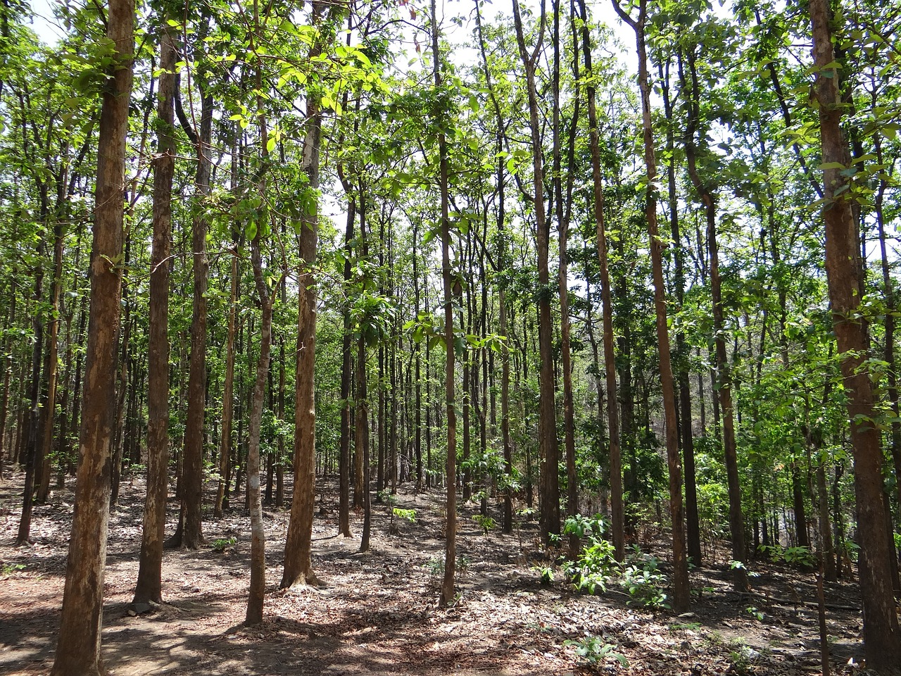

Pohon Jati: Jenis, Manfaat, Habitat dan Karakteristiknya

Pohon jati merupakan pohon yang menghasilkan kayu berkualitas tinggi. Pohon jati ini memiliki kayu yang kuat dan awet untuk membuat furniture. Kayu dari pohon jati merupakan kayu berkualitas tinggi dan dihasilkan dari pohon yang berumur lebih dari 80 tahun.
Pohon jati dapat tumbuh hingga ratusan tahun, di Indonesia pohon jati terbesar dan tertua yaitu pohon 'Jati Denok' yang tumbuh di Blora, Jawa Tengah.
Jenis-Jenis Pohon Jati
Di masyarakat Jawa terdapat beberapa jenis pohon jati yaitu:
1. Jati lengo atau jati malam, pohon ini memiliki kayu yang keras, berat, terasa halus apabila diraba dan seperti mengandung minyak. Jati lengo juga berwarna gelap, berbercak, dan bergaris.
2. Jati sungu, berwarna hitam, padat, dan berat.
3. Jati werut, yaitu pohon jati yang memiliki kayu yang keras dan serat berombak.
4. Jati doreng, berkayu sangat keras dengan warna loreng-loreng hitam menyala, sangat indah.
5. Jati kembang.
6. Jati kapur, kayunya berwarna keputih-putihan karena mengandung banyak kapur. Kurang kuat dan kurang awet.
Manfaat Pohon Jati
Pohon jati terdiri dari beberapa bagian yang memiliki manfaat sebagai berikut:
1. Daun Jati
Daun jati dapat dimanfaatkan sebagai pembungkus makanan. Nasi yang dibungkus dengan daun jati akan terasa lebih nikmat. Contohnya adalah nasi jamblang yang terkenal dari Cirebon. Selain itu daun jati juga banyak digunakan di Yogyakarta, Jawa Tengah, dan Jawa Timur sebagai pembungkus tempe.
2. Hama Jati
Berbagai jenis serangga hama jati juga sering dimanfaatkan sebagai bahan makanan orang desa. Dua di antaranya adalah belalang jati (Jw. walang kayu), yang besar berwarna kecoklatan, dan ulat jati (Endoclita). Ulat jati bahkan kerap dianggap makanan istimewa karena lezatnya.
3. Kayu Jati
Kayu jati dimanfaatkan untuk membangun rumah dan juga alat pertanian. Kayu jati pada masa perang juga digunakan untuk membangun kapal-kapal niaga dan kapal-kapal perang. Saat ini kayu jati digunakan sebagai furnitur.
Habitat Pohon Jati
Pohon Jati menyebar luas mulai dari India, Myanmar, Laos, Kamboja, Thailand, Indochina, sampai ke Jawa. Pohon Jati sendiri tumbuh di hutan-hutan gugur, yang menggugurkan daunnya di musim kemarau.
Pohon Jati dapat bertumbuh di iklim kering yang nyata, namun tidak terlalu panjang. Memiliki curah hujan antara 1.200-3.000 mm per tahun dan dengan intensitas cahaya yang cukup tinggi sepanjang tahun.
Ketinggian tempat yang optimal adalah antara 0 - 700 m dpl; meski jati bisa tumbuh hingga 1.300 m dpl.
Di luar Jawa, pohon jati dapat ditemukan di Pulau Sulawesi, Pulau Muna, daerah Bima di Pulau Sumbawa, dan Pulau Buru. Pohon jati berkembang juga di daerah Lampung di Pulau Sumatera.
Sedangkan di Jawa, pohon jati menyebar di pantai utara Jawa, mulai dari Kerawang hingga ke ujung timur pulau ini. Namun, hutan jati paling banyak menyebar di Provinsi Jawa Tengah dan Jawa Timur.
Di kedua provinsi ini, hutan jati sering terbentuk secara alami akibat iklim muson yang menimbulkan kebakaran hutan secara berkala. Hutan jati yang cukup luas di Jawa terpusat di daerah alas roban Rembang, Blora, Groboragan, dan Pati. Bahkan, jati jawa dengan mutu terbaik dihasilkan di daerah tanah perkapuran Cepu, Kabupaten Blora, Jawa Tengah.
Karakteristik Pohon Jati
1. Tinggi pohon dapat mencapai 50 meter hingga 1,2 meter.
2. Umur pohon jati biasanya adalah diatas 40 tahun.
3. Pohon jati tumbuh sangat lambat sehingga densitas kayunya pun lebih baik. Untuk tumbuh sebesar 40 cm dibutuhkan minimal 50 tahun masa tumbuh pohon jati.